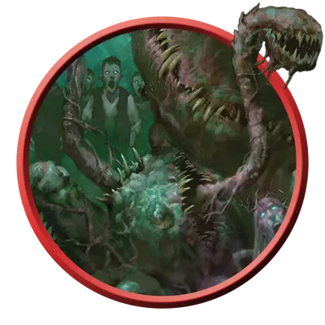

Телоглот выплодок
Bodytaker Podling
Среднее или Маленькое Растение, Нейтральное Злое

Класс Защиты 12 Инициатива +0 (10)
Хиты 26 (4к8 + 8)
Скорость 30 футов
| мод | спас | ||
|---|---|---|---|
| СИЛ | 16 | +3 | +3 |
| ЛОВ | 11 | +0 | +0 |
| ТЕЛ | 14 | +2 | +2 |
| мод | спас | ||
|---|---|---|---|
| ИНТ | 10 | +0 | +0 |
| МДР | 10 | +0 | +0 |
| ХАР | 10 | +0 | +0 |
Иммунитеты Испуганный, Очарованный
Чувства пассивное Восприятие 10, Слепое зрение 30 футов
Языки Глубинная речь плюс ещё один язык
Опасность 1/2 (100 опыта; БВ +2)
Особенности
Подобие жизни. Выплодок — это физическая копия существа, переваренного Телоглотом особью. Выплодок совершает с Преимуществом проверки Харизмы (Обман), чтобы выдавать себя за переваренное существо. Когда выплодок умирает, его тело растекается лужей растительной кашицы.
Действия
Размашистый удар. Бросок рукопашной атаки: +5, досягаемость 5 фт. Попадание: 6 (1к6 + 3) Дробящего урона.
Бонус мастерства +2
Среда обитания Болота, Леса, Луга, Холмы
Сокровища Любые
Телоглоты
Ворующая тела инопланетная флора
Телоглоты — разумные организмы, чья родина — давно погибшая планета Материального плана. Чтобы прожить дольше чем их обречённый мир, эти загадочные растения разослали свои семена среди звёзд. Изредка эти семена, похожие на метеориты, падают на плодородные миры и пускают корни. Из них вырастает новая полноценная особь телоглота, стремящаяся расти и множиться, пока весь мир не окажется под властью его вида. Себе в помощники она создаёт жуткие растительные копии местных обитателей — выплодков. Выплодки служат воле растения‑прародителя, проникают в общины и подменяют собой тех, с кого скопированы. Когда приходит время, они стараются изолировать и поймать живых существ, чтобы те стали либо удобрением для особи, либо сырьём для новых выплодков.
Телоглоты выплодки — почти идеальные копии существ, поглощённых телоглотом особью. Выплодок наследует облик и воспоминания того, кого дублирует, но целиком предан породившему его растению. По сути, выплодок — не самостоятельное создание, а расходуемый придаток телоглота.
Телоглоты выплодки часто выдают свою истинную природу странным поведением. Чаще всего они упускают нюансы общения: говорят неестественно, отрывисто или упоминают себя в третьем лице. Друзья и родные подменённого могут почувствовать, что с их близким что‑то не так, но мало кто догадывается об истинной причине столь резких перемен. Выплодок может попытаться отвести подозрения, сославшись на нездоровье или обвинив в странности самих окружающих. Если же выплодка уличают в том, что он — растение, или застают его за тем, как он ухаживает за телоглотом особью, то он бросается в бой и сражается насмерть.
Совершите бросок по таблице «Повадки выплодка» для вдохновения или определите сами его странные привычки.
Повадки выплодка
| к6 | Выплодок демонстрирует странную привычку… |
| 1 | Пить воду из грязных корыт. |
| 2 | Есть одну и ту же пищу на завтрак, обед и ужин. |
| 3 | Чрезмерно и беззастенчиво принимать солнечные ванны. |
| 4 | Ходить без обуви, чтобы чувствовать землю босыми ногами. |
| 5 | Замирать и вслушиваться в неслышимые звуки. |
| 6 | Шептаться с цветами и комнатными растениями. |